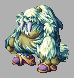
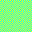
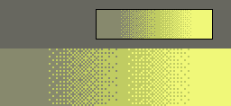
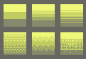
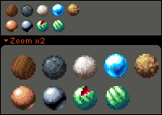
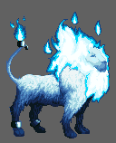
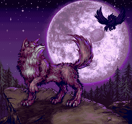

Cours de pixel art 8 : textures et dithering
Sauf qu'en fait on va parler de dithering avant de parler de textures. Mais ça sonnait mieux dans l'autre sens.

Après avoir fait une étape au pays de la douceur et de la volupté grâce à l'anti-aliasing, nous allons aujourd'hui nous attaquer à des techniques bien crades, sauvages et pleines de pixels (pour changer) — à savoir l'imitation de textures et le dithering. Commençons par une petite mise au point linguistique : le mot français pour parler de dithering est « tramage » mais les habitudes étant ce qu'elles sont (ça et mes préférences personnelles), vous n'entendrez pas le mot « tramage » dans ce chapitre. A vous de voir celui que vous souhaitez utiliser. Vous ne recevrez pas de coups de fouet si votre choix se porte sur « tramage » (juste un mépris sans fin de ma part).
Ditherer n'est pas jouer
Le dithering est une bonne vieille technique inventée du temps de Mathusalem, à l'époque où les machines étaient encore trop péraves pour afficher plus de quelques couleurs à la fois et où les pixel artistes avaient du temps à perdre. Il s'agit d'une technique qui a pour but la réalisation d'un dégradé en utilisant un minimum de couleurs intermédiaires (oui c'est paradoxal, non ce n'est pas absurde).
Concrètement comment ça marche ? L'œil humain est en fait tout pourri et distingue les pixels de votre écran avec une précision douteuse, sur laquelle repose bon nombre d'illusions d'optiques, si bien qu'il a tendance à mélanger la teinte d'un pixel avec celles de ses voisins. Le carré vert en dessous de ce paragraphe est uniquement constitué de pixels jaunes et bleus entrelacés, et votre œil effectue le mélange pour lui donner sa couleur verte. Merveilleux n'est-ce pas ?

Nous allons donc utiliser cette propriété pour créer des dégradés de couleurs (par exemple du jaune au bleu, en utilisant l’entrelacs ci dessus pour créer du vert entre les deux). Il y a 3 bonnes raisons de procéder ainsi plutôt que d'utiliser un dégradé automatique comme en proposent les logiciels du type Photoshop : la première, c'est qu'en utilisant peu de couleurs, vous maintenez un style "pixel art" qui correspond au reste de votre jeu (pour peu que vous le fassiez en pixel art), la deuxième c'est que cela permet une gestion plus intelligente de votre palette : vous pouvez réutiliser certaines couleurs de votre palette dans le dégradé pour rendre l'image plus cohérente. Enfin la 3eme et certainement la meilleure, c'est que contrairement à un dégradé automatique qui réalise une transition parfaite mais monotone entre 2 couleurs, vous pouvez ici choisir des couleurs intermédiaires originales (hop, un ptit coup de saturation en plus au milieu par exemple) pour avoir des dégradés intéressants pour l'œil.
Sachez tout de même que l'heure de gloire de cette technique est finie depuis belle lurette et que mal employée, elle a plus de chances de ruiner vos chefs d'œuvres que de les embellir. Par ailleurs, c'est une technique qui nécessite beaucoup d'espace pour être appliquée et elle est complètement inutile dans la création d'un sprite. Elle a beaucoup servi à réaliser les images de la demoscene ou les arrières plans de ciel dans certains jeux.
Voyez ci-dessous à quoi ressemble un dégradé fait avec 3 couleurs en utilisant du dithering. Je pense qu'il est plus simple pour vous de regarder le motif que pour moi de le décrire. La tendance générale consiste à utiliser de plus en plus une couleur à mesure qu'on se rapproche de "son coté". Il ne faut pas trop coller des motifs distincts les trop près les uns des autres mais les laisser s'étaler sur plusieurs lignes, sinon une fois dezoomé on a pas l'impression que ces motifs obéissent à une quelconque logique.

Bien entendu, il existe watmille motifs différents et tous plus compliqués les uns que les autres, histoire de faire passer votre petite sœur et son point de croix pour une débutante. En voici quelques uns parmi les plus simples, rien ne vous empêche de créer les vôtres. Vous n'êtes d'ailleurs même pas obligés de faire appel à des motifs ordonnés : un dithering chaotique fonctionne aussi et crée une certaine texture (sale et rocailleuse) sur une surface.

Ah tiens ça tombe bien, on allait justement parler de textures. Quel hasard.
Lumières et matériaux
Savoir réaliser des textures en pixel art, c'est savoir représenter différents matériaux indépendamment de leur forme. C'est ce qui permet à votre joueur de penser "je passe sur le petit pont en bois" plutôt que "je passe sur le petit pont en plastique". En effet, tous les matériaux ont une texture qui leur est propre et qui permet de les distinguer. Deux critères sont déterminants dans la réalisation d'une texture : le premier c'est le motif qui recouvre votre matériau. Il s'agit le plus souvent d'aspérités à sa surface (nœuds sur le bois, petites éraflures sur la pierre) qu'il convient de représenter en réalisant du shading à très petite échelle. Le second critère est la façon dont le matériau réagit à la lumière et la réfléchit, c'est ce qui fait que certaines matières sont plus brillantes que d'autres. Passons sans plus attendre à la pratique en parcourant ensemble une petite sélection de matériaux. Les bestiaux en image :

- Le bois : Pour le bois, tout repose sur le motif à la surface, qui est un réseau de lignes qui se coupent parfois pour former des nœuds. Il est peu sensible à l'éclairage, sauf si il a été vernis (ce n'est pas le cas ici).
- Le granit : Le granit a une surface bien plus marquée et irrégulière que le bois et une boule de granit ne s'ombre pas "simplement comme une sphère". En déformant les ombres, on déforme la surface de la pierre pour dessiner les aspérités. Les petites touches de couleurs isolées servent à représenter les petits trous/bosses sur la pierre : il s'agit en fait de shading à très petite échelle. Sa réaction à la lumière est un peu moins timide que celle du bois, mais toujours très matte.
- Le marbre : La technique pour le marbre est pratiquement la même que pour le granit. La principale différence est que le marbre est généralement plus lisse (on utilise donc plus de couleurs et plus d'antialiasing). Par ailleurs, il a tendance à recevoir des highlights bien plus clairs que ceux du granit.
- L'eau (ou le verre) : Ces deux matières sont semi-transparentes et ont donc tendance à réfléchir les lumières à l'intérieur d'eux même, d'où le second highlight en bas à gauche. En plus de cela, une grande partie de la lumière reçue est renvoyée et c'est pour cela que le highlight principal (en haut à gauche) est aussi gros et clair. Enfin, ils s'agit de matières très lisses qui demandent beaucoup d'anti-aliasing.
- L'argile : L'argile est une des matières les plus simples à représenter. Elle demande peu de couleurs car elle réagit peu à la lumière et son aspect grossier permet de ne pas trop s'embêter avec des détails. La boule a été entièrement faite avec un curseur de taille 2pixels * 2pixels (c'est dire si les détails ont peu d'importance).
- Le cuivre : Le cuivre, comme tous les métaux, réfléchit violemment la lumière dans ses highlights et devient très rapidement très sombre dans les zones à l'ombre. Il ne faut pas avoir peur d'utiliser une palette très étendue, non seulement pour rendre compte du contraste monstrueux, mais aussi pour donner un aspect lisse à la surface (antialiasing à la clé). A noter, les ombres sur le cuivre ont tendance à partir dans le VERT (oui, le vert. Ne me demandez pas pourquoi, regardez plutôt des photos pour vous en convaincre).
- Le métal (acier) : Comme annoncé juste au dessus, les métaux explorent toute la gamme de valeurs, du noir au blanc…mais sans passer par le gris. Il est courant de voir des débutants représenter les métaux par du gris, mais c'est une erreur. Les métaux sont toujours teintés, soit intrinsèquement soit par l'éclairage ambiant, mais il ne sont jamais simplement gris.
- Pastèque : En fait, la pastèque réagit presque comme le plastique mais je trouvais plus drôle de faire une pastèque qu'un bout de plastique. Les highlights du plastique sont très désaturés et partent vite vers le blanc, tandis que les ombres sont peu prononcées. Bien évidemment, il n'y a ni motif ni aspérités sur le plastique. Par contre pour les pastèques…
A POIL !
Les poils, cheveux, fourrures et autres viriles pilosités sont un cas à part et particulièrement difficile à traiter (les artistes 3D ont d'ailleurs autant de mal que nous avec, si ça peut vous rassurer). Tout le problème vient du fait qu'un poil est plus fin qu'un pixel et que par conséquent, on ne peut pas représenter de poils. C'est triste hein. Tant pis on laisse tomber alors. Ou pas.
La solution consiste à ne pas représenter des poils ou des cheveux, mais des mèches (et en plus y'a sacrément moins de mèches que de cheveux, alors c'est tout bénef). Chaque mèche peut être représentée par une ligne ou un triangle dont l'épaisseur dépend la longueur des poils (plus les poils sont longs, plus les mèches sont fines) et dont l'orientation sert à définir le volume sous-jacent : les poils sont dans le sens de la surface qu'ils recouvrent ou perpendiculaire à cette direction (selon ce qui est le le plus proche de la verticale / ce qui vous semble le plus logique). Par exemple, les poils sur le dos d'un animal sont horizontaux, tandis qu'ils tombent plus à la verticale (mais pas entièrement) le long de ses flancs.
Enfin, les poils sont des textures d'une grande douceur (pensez douillet :3) et cela doit se ressentir dans vos choix de couleur pour les dessiner. Les transitions entre teintes doivent être masquées autant que possibles, et à cet effet, il est intéressant d'adopter une disposition en mille-feuille. Il s'agit de considérer les poils comme une couche de manteaux que porte votre créature, certains (les plus foncés) "tombant" plus bas que d'autres dans les zones d'ombres. Cela vous permettra d'entrelacer les différentes teintes tout en conservant la texture du pelage. C'est précisément ce que j'ai essayé de faire dans l'exemple du lion ci-dessous.

Enfin, je vous laisse cette fois encore avec un pixel art réussi à admirer. Remercions Ahruon qui nous fournit généreusement sa Moonlight Parade pour illustrer cette partie. je vous conseille d'y jeter un coup d'œil attentif (en zoomant très fort de préférence).

Pour conclure, revenons sur la retenue dont il faut faire preuve avec le dithering et les textures. Il est souvent préférable de maintenir certaines zones ou objets dans l'ombre ou la lumière suffisamment fort pour que leur texture soit indiscernable. Cela permet de renforcer la profondeur de votre image, cela vous fait moins de travail, et cela sert à définir les zones sur lesquels l'accent est mis (les plus détaillées donc). Remarquez que la patte arrière gauche du lion est pratiquement un aplat de couleur. Petite note pessimiste pour finir : si vous avez l'intention d'animer un truc pareil, vous allez en baver alors réfléchissez-y à deux fois avant de trop détailler.
Ajouter un commentaire
Commentaires

merci pour le conseil